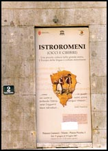
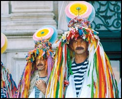

"Bine ați venit la noi. Domnu v-ajute."
Două afiș enorme de pânză flutură, legănate de briza mării Adriatice, pe zidurile fastuosului palat Constanzi din centrul orașului Trieste: "Salvate istro-romeni!," "Salvați istro-românii!". Dedesubt, în conturul ca o inimă al peninsulei Istria, se văd doi țărani, un bărbat și o femeie. Fota, ițari, laibăr, opinci, asemeni țăranilor noștri din Carpați. Și cuvintele marelui lingvist român Sextil Pușcariu, scrise cu litere mari în limba italiană: "Ca o inimă se profilează Istria pe albastrul Mării Adriatice. În această inimă curge sânge românesc".
Rămâi uluit, privind. E amiază, e miezul verii, soarele arde orașul imperial, pustiu, de piatra albă. În fața palatului Constanzi se deschide, largă, piața Unita. O piață enormă, ce se sfârșește direct în apele mării. Acolo, într-o sală din pântecul unei clădiri ce înaintează mult în valurile Adriaticii, un grup de oameni vorbesc despre România. Sunt o sută, cel mult două. Toți așezați pe scaune, cu spatele spre o ușă larg deschisă, prin care nu se vede decât albastrul cerului și al mării, împreunate. Doar câțiva dintre ei sunt români. Cei mai mulți sunt italieni, sloveni și croați. Organizator e un italian get-beget, Edvino Curtis. Vorbesc despre istro-români, o străveche populație românească, care mai trăiește acum doar în sudul peninsulei-inima, în Istria croată. Despre niște "români vechi" de-aproape un mileniu, ori poate chiar dintotdeauna, rămășițe din vremea Daciei Mari. Acești "străvechi" au azi una dintre cele mai rare limbi de pe pământ. Doar vreo două sute de suflete o mai "cuvintează". Dacă nimeni nu întreprinde ceva foarte urgent, peste 30-40 de ani nu o va mai vorbi nimeni. Graiul acesta va muri. Străinii adunați la Trieste se-ntreabă cu patimă ce s-ar putea face pentru istro-români. Cum s-ar putea salva limba și cultura lor, "o adevărată comoară," "un muzeu viu al limbii române vechi și al întregii Europe". Altădată au fost mii, ocupau aproape întreaga peninsulă, până aici, la Trieste, în acest mare oraș italian. Azi îi găsești doar în jurul a două sate croate din sud, sărace și uitate de lume - Jeiăni și Sușnievița. Deși nici un om de acolo n-a fost vreodată în România, ei vorbesc încă o limbă română ancestrală, ca-n Evul Mediu, sau poate chiar a primilor români răsăriți din daci. Părăsiți de toată lumea, fără școală, biserică, televiziune sau presă în limba lor, fără nici o știre sau ajutor "de acasă" din România, ei încă reușesc să vorbească.
"Bire ați verit la noi! Nu va fie rușire de limba voastră, nu va prăpădiți pre cale. Va cuvintați cu ai voștri feciori, în seliștile (satele) voastre. Doar așoa neica limba nu se pierde și fi-va apărată în veac. Domnu v-ajute!..." Așa sună cuvântul de deschidere a conferinței de la Trieste, al domnului Emil Petru Rațiu, în cea mai curată limbă istro-româna. Auditoriul îl privește fascinat. Sărmanul domn Rațiu... El nu e istro-român, e "român nou," de-al nostru, de azi, medic la Roma, plecat de zeci de ani din România. Tot de atâția ani se luptă singur, cu încăpățânare, pentru drepturile acestei etnii urgisite. Ca un cercetător amator, a bătut din poartă-n poartă pe la casele istro-românilor, încurajându-i necontenit, studiindu-le limba, implorându-i să n-o uite și s-o vorbească împreună cu feciorii lor, mai departe. A protestat cu succes la cele mai înalte foruri europene, așa cum n-au făcut-o toți savanții și oamenii politici din țara laolaltă.
Nici un oficial român nu e astăzi la conferința asta. Nici un ambasador, nici un politician. Niciodată, în cei 17 ani de la Revoluție, n-a călcat nimeni pe-aici. Nimeni nu i-a ajutat vreodată pe istro-români, măcar cu o vorbă bună. Doar acum, la Triste, le-au sărit în ajutor "frații" lor din înălțimile Alpilor: reprezentanți ai friulanilor, ai bellunezilor, ai romanșilor. Minorități la fel de primejduite, dar care au știut să-și păstreze graiul și identitatea. Au venit aici ca să-i ajute pe frații lor istro-români, să-i învețe ce trebuie să facă. Cercetători străini îi studiază "cu lupa". Echipe de la Discovery îi filmează și-i urmăresc atent, acasă la ei. Se mira de fiecare dată că această limbă se păstrează de atâtea veacuri, poate de milenii, vorbind de "un adevărat miracol". E inexplicabil, zic toți. Nici un grai nu se poate menține atâta vreme, sub presiunea atâtor limbi care-l înconjoară și fără absolut nici un sprijin din patria-mamă. Dialectul istro-român e trecut în Cartea Roșie a UNESCO pentru limbi pe cale de dispariție, cu specificația "grav periclitata". Despre toate astea se vorbește azi aici, la Trieste, în sala cu ușa care da spre neantul albastru, către mare și cer. Undeva, în spate, suntem noi, singurii jurnaliști români. Suntem patru. Patru reporteri de la "Formula As".
"De sute de ani vă așteptam să veriți. S-aveți a noastră grije."
Soarele asfințește lin peste Adriatica. Oamenii de la conferință ies împreună pe chei. Stau laolaltă, grupați, vorbesc aprins între ei. Sunt altceva decât lumea obișnuită care trece prin Trieste, decât acei vilegiaturiști eleganți ce se plimbă tihnit pe țărm, cu mâinile la spate, printre yahturi albe.
La conferință au fost invitați și câțiva istro-români. Îi vad. Cinci bărbați, țărani din Jeiăni, din cel mai important sat al istro-românilor. Oameni puternici, cu musteți viguroase, brațele încrucișate pe piept și privirea hotărâtă. Petru Rațiu îi îmbrățișează pe toți, nu știe pe care sa-l prindă în brațe mai întâi. Ochii îi sunt luminoși, râzători, tremurând de lacrimi. De-o jumătate de an n-a mai fost pe la ei. Le împarte câte-o revista "Scrisoare către frații rumeri," singura revistă istro-română scoasă vreodată-n istorie, pe care el, bătrânul medic, o scrie singur și-o tipărește la imprimanta din biroul său, apoi o trage la xerox. Și abia atunci când îi aud pe țăranii aceia rostind serioși cele dintâi cuvinte, cu glasurile lor groase și bărbătești, abia atunci simt, cu adevărat... socul! "Da' când veriți la noi acoasă? Veriți mâre (mâine)? Poate veriți și cu ceata de jurnaliști. Noi tot înțelegem tot ce ei cuvinta în românește..." Noi, "ceata" de jurnaliști, rămânem pur și simplu cu gurile căscate. Dacă îl schimbi pe "n" în "r" (inimă-irimă, bine-bire, întocmai ca-n Maramureș) și câteodată pe "a" în "oa" (casă-coasă, așa-așoa, carne-coarne), înțelegem și noi aproape tot ce cuvânta. Ne năpustim asupra lor, cu mii de întrebări. Abia acum ne dăm seama cu-adevărat cine sunt țăranii pe care-i avem în față. Oameni care au supraviețuit veacurilor. Nici ei, nici bunicii, nici străbunicii lor n-au fost vreodată în România. Nu știu nimic despre țara aceea stranie de unde venim noi, despre Bucureștiul aflat la peste 1500 de kilometri depărtare. Încă de copii, n-au auzit niciodată vorbind un român "adevărat," afară de acest domn Rațiu și alți doi-trei entuziaști ca dânsul, care au trecut pe la ei prin sat de vreo cinci-șase ori în ultimii 17 ani. Și totuși, acum îi auzim, cu urechile noastre.
Pornim împreună, înapoi, spre palatul Constanzi, acolo unde se va deschide prima expoziție închinată vreodată istro-românilor, având ca temă istoria, tradițiile, limba acestor oameni fabuloși. (Toți banii necesari acestei expoziții, cheltuielile pentru închirierea sălilor, cazarea și masa participanților, banii pentru afișele ce împânzesc orașul, toate au fost suportate de un singur om: italianul Edvino Curtis, împătimit de istro-români. El a realizat expoziția și a organizat totul, fără absolut nici un sprijin, măcar moral, din partea statului român.)
 Domnul Rațiu se bucură de bucuria cu care-i ascultăm pe istro-români. Înalt, subțire, elegant, în costumul sau alb, cu părul întins pe spate și chip de actor englez, trece de la unul la altul și-i ia pe după umeri, de parcă ar vrea să-i strângă pe toți, din mers, lângă inima sa. Ne zice mereu ca acești oameni ar trebui să fie numiți eroi, un tezaur național, că nu poate pricepe nicicum nepăsarea și indolenta deplină a "trădătorilor" de la București. "Uitați-vă de pildă aici, în piața Unita, în 1996 a fost o uriașă manifestație numită "Salvați istro-românii!". Peste tot în piața asta erau tineri întinși pe jos, italieni, americani, australieni... Strigau toți: "Salvați-i! Nu lăsați acest neam să moara!". Toate străzile din Trieste erau pline de afișe cu un chip uriaș de țăran istro-român din Jeiăni. Te copleșeau încă de când ieșeai din gară. Ei bine, ambasadorul nostru la Zagreb a adormit în sala de conferințe. A ieșit de la dezbateri, s-a dus să bea ceva la o cârciuma, apoi s-a întors și a adormit. Va dați seama? Străinii aia, etnografi, lingviști, cercetători, se strofocau acolo să găsească soluții pentru istro-români, iar ambasadorul nostru dormea. Un om gras, gușat, care asuda mult. Se uitau la dansul și nu le venea să creadă..."
Domnul Rațiu se bucură de bucuria cu care-i ascultăm pe istro-români. Înalt, subțire, elegant, în costumul sau alb, cu părul întins pe spate și chip de actor englez, trece de la unul la altul și-i ia pe după umeri, de parcă ar vrea să-i strângă pe toți, din mers, lângă inima sa. Ne zice mereu ca acești oameni ar trebui să fie numiți eroi, un tezaur național, că nu poate pricepe nicicum nepăsarea și indolenta deplină a "trădătorilor" de la București. "Uitați-vă de pildă aici, în piața Unita, în 1996 a fost o uriașă manifestație numită "Salvați istro-românii!". Peste tot în piața asta erau tineri întinși pe jos, italieni, americani, australieni... Strigau toți: "Salvați-i! Nu lăsați acest neam să moara!". Toate străzile din Trieste erau pline de afișe cu un chip uriaș de țăran istro-român din Jeiăni. Te copleșeau încă de când ieșeai din gară. Ei bine, ambasadorul nostru la Zagreb a adormit în sala de conferințe. A ieșit de la dezbateri, s-a dus să bea ceva la o cârciuma, apoi s-a întors și a adormit. Va dați seama? Străinii aia, etnografi, lingviști, cercetători, se strofocau acolo să găsească soluții pentru istro-români, iar ambasadorul nostru dormea. Un om gras, gușat, care asuda mult. Se uitau la dansul și nu le venea să creadă..."
 Următorul ambasador, Constantin Ghirda, avea să declare că-n satele istro-române nu mai sunt "decât vreo doi moși," care nu merită mare atenție. "L-am auzit chiar eu declarând asta, la un dineu oficial în Veneția. De unde știa? Cică îi spusese lui "cineva" de pe-acolo. Habar n-avea de tratatul bilateral româno-croat din 1994, ce prevede școli, schimburi culturale și toate drepturile pentru minorități. Croații sunt toleranți, ne-ar lăsa să facem ceva pentru acești bieți oameni, este cadru legal, totul mură-n gură. De ce nu i-a chemat nimeni în România pe oamenii ăștia, cu folclorul și costumele lor? De ce nu s-au gândit să le facă măcar o grădinița în sat, ca să nu se piardă limba chiar de tot? De ce nu le-au trimis măcar câteva abecedare? Oamenii le-au cerut, s-ar citi pe rupte, cu disperare s-ar citi, chiar și de către adulți. De ce n-au adus câțiva studenți filologi, să studieze cel mai vechi grai românesc din lume, care acum dispare? De ce n-au venit ei înșiși, fie doar să-i vadă pe românii ăștia uitați? Să le zică doar atât: "Fiți mândri de limba asta". Atât. Sunt lucruri foarte simple... Am fost acolo, sunt multe case goale, oamenii mi-au spus că le-ar dona bucuroși, gratis, daca ar ști că-n ele se va face o grădiniță. La noi, croații carașoveni se bucură de toate privilegiile, având grădinițe, școli, până și liceu în limba maternă. Nu de la croați pleacă astăzi necazul. Totul pleacă de la ticăloșii aia din tara..."
Ambasadoarea de azi, Oana-Cristina Popa, nici nu s-a obosit să treacă vreodată prin satele istro-române, în cei trei ani de când stă la Zagreb. Petru Rațiu a implorat-o în scrisori să meargă măcar puțin, măcar să-i salute pe oamenii aceia, căci asta ar însemna enorm pentru dânșii. În 2006, ea a ajuns până la Pola, un oraș croat din sud, trecând chiar prin inima ținutului istro-românesc, la numai câțiva kilometri de satele Jeiăni și Sușnievița. Nu s-a deranjat însă să se oprească. "Cine îi alege, Dumnezeule, pe diplomații ăștia? Asta-i o diplomație a lașității, a indolenței! Cum să ne mai miram, așadar, că doamna Popa nu este astăzi aici, la una din cele mai importante manifestări dedicate unor români străvechi din țara de care ea răspunde?" Acolo, în mijlocul uriașei piețe din Trieste, Petru Rațiu ridica pumnul spre cer. Un pumn delicat, cu degete subțiri, fără putere. țăranii de Jeiăni merg mai departe, cu privirea în pământ. Au înțeles aproape tot ce-am vorbit. Ei însă au renunțat de mult să se mai revolte. Au și uitat ce-nseamnă să-ți fie dor atâta timp de cineva care nu te vrea, care nu te iubește.
"De sute de ai (ani) v-am așteptoat pre voi să veriți, să ne zbăviți, s-aveți a noastră grije..." Așa zice Mauro Doričić, bărbat cu chipul ros, fruntea înaltă și mustața ca argintul, un fel de căpetenie negrăită a tuturor jeiănenilor. Singurul oficial român a venit la ei în sat în anul 1995 - un ambasador. Se pregătiseră cu toții, "ca de-un mare praznic (sărbătoare)," cu mese întinse, cu cântece, cu "pare și soare" (pâine și sare). S-au primenit, au îmbrăcat costumele vechi, au tras clopotele la biserică. Aveau emoții. Era pentru ei, fără exagerare, un eveniment istoric, epocal. Ambasadorul a stat doar o jumătate de ora, în picioare. Zicea mereu ca e grăbit, c-o să mai vina el. La plecare, le-a făcut niște promisiuni tuturor, strigate din ușa mașinii. Promisiuni pe care nu și le-a ținut niciodată.
Zvonciarii din Jeiăni
Trebuie neapărat să mergem la Jeiăni. Să-i vedem pe istro-români acolo, acasă la ei. Pornim a doua zi. De la Trieste, ca să ajungi în satele acelea, trebuie să treci două frontiere: cea slovenă și cea croată. Ne îndreptam spre Monte Maggiore, singurul munte de pe întreaga peninsula a Istriei. Unde se puteau ascunde mai bine păstorii vlahi (așa li se mai zice și azi istro-românilor) decât în aceste locuri? Muntele Mare... De-o parte și de alta a lui încă mai trăiesc, uitați, puținii noștri frați "rumeri".
La Jeiăni ajungi greu, chiar dacă acum este aproape de marea autostradă spre Rijeka. Cincisprezece kilometri de drum întortocheat, fără indicatoare, printr-un codru neîntrerupt. Parca tot izolați se încăpățânează să trăiască și astăzi vlahii aceștia, departe de restul croaților. La piciorul muntelui, într-o poiană îngustă, înconjurată numai și numai cu păduri sălbatice de fag. Acolo și-au pitit satul, din străvechime. Case mari, albe, de gospodari lipiți de locul lor. Multe din ele în ruină, moarte odată cu ultimii oameni. "Cârciuma" cu câțiva "bătâri" șezând la mese de tablă, cu păhăruțe în față, punând alene țara la cale.
 Bărbații tineri ne așteaptă la capătul satului, aliniați în fața clădirii școlii. Cei cinci pe care i-am cunoscut la Trieste sunt printre ei. Cu toții își frământă palmele mari, aspre, emoționați ca niște feciori. Stăm față în față, noi și ei, români și istro-români. Puțin rușinați, neștiind ce să zicem mai întâi. Vorbele parcă nu se lăsa rostite. "Bire ați verit, fraț, în obcina noastră!," sparge tăcerea unul Radu Stancović, zis Garjinca, și atunci începem toți a zâmbi. "Na, haideți nuntru..."
Bărbații tineri ne așteaptă la capătul satului, aliniați în fața clădirii școlii. Cei cinci pe care i-am cunoscut la Trieste sunt printre ei. Cu toții își frământă palmele mari, aspre, emoționați ca niște feciori. Stăm față în față, noi și ei, români și istro-români. Puțin rușinați, neștiind ce să zicem mai întâi. Vorbele parcă nu se lăsa rostite. "Bire ați verit, fraț, în obcina noastră!," sparge tăcerea unul Radu Stancović, zis Garjinca, și atunci începem toți a zâmbi. "Na, haideți nuntru..."
Nu vă pot descrie bucuria pe care-o simt în ochii lor, atunci când ne poftesc să ședem și ne "răstignesc" (întind) masa. Da, se poate spune ca acești oameni ne așteptau. De o viață întreagă ne așteptau, ca pe niște rubedenii dragi, care-au întârziat un pic la un prânz în familie, dar pe care ei îi iartă, blajini, bucurându-se ca totuși au venit, fie și în ultimul ceas. Bem "vir" (vin) și vorbim relaxați, mereu râzând, de parc-am face interviuri cu cine știe ce ciobani de-ai noștri, din Bucovina sau din Apuseni.
Sunt azi în sat vreo 130 de vorbitori de istro-română. Acum 50 de ani erau de șase ori mai mulți. Peste 30-40 de ani nu va mai fi nici unul.
Dintre bărbații strânși în jurul mesei, cei mai mulți sunt "zvonciari," celebrii clopotari din Jeiăni, păstrători ai unei tradiții străvechi, ce se mai păstrează, ca prin miracol, și azi. Jeiănenii nu pot trăi fără acești zvonciari. Nu-și pot începe anul nou fără ei. La fiecare 6 ianuarie, zvonciarii colindă întreg satul și "zvonesc" "un an bur," roditor. Cu "șubele" de oaie pe spinare și "baierele" cu tălăngi răsunând asurzitor pe solduri, joacă un dans precreștin, viril, sălbatic, de alungare a iernii și spiritelor rele. Ei sunt unul din cele mai renumite grupuri folclorice ale Croației și ale întregii Europe. Trofeele lor atârnă peste tot pe pereții școlii din acest sătuc rupt de lume. Au fost chemați ca invitați speciali, cu mare respect, la cele mai prestigioase festivaluri europene de folclor. Au colindat întreg continentul cu clopotele, dansurile și doinele lor ancestrale. Doar în România nu au fost poftiți niciodată.
 Ei ar trebui să fie astăzi pentru noi un bun național, o comoara, un "brand" cu care să ne lăudam peste tot în lume. Dar sunt poate cei mai vechi români, cu cel mai curat sânge românesc, deși doinesc numai în graiul nostru ancestral, jelind "o feață mușata cu negrii ochi," cu toate astea, nimeni din România nu a auzit de dânșii (ambasadoarea de la Zagreb avea să ne recunoască deschis că nu știe absolut nimic despre respectivul grup folcloric). Și totuși, cineva i-a poftit pe zvonciari în țara-mamă. "Mai an," anul trecut, pentru prima oară. Arman Guța de la București, un cercetător solitar și visător, asemeni domnului Rațiu, a fost cel dintâi om care i-a chemat vreodată pe jeiăneni în România, la un festival de folclor pentru minorități, în Constanța. Zvonciarii s-au dus pe cheltuiala lor, cu mașina lor. Urmau să facă doar pe drum șase zile. șă rămână acolo o singură noapte, apoi să se-ntoarcă. Dar ce mai contau toate astea? Important era că, în sfârșit, cineva îi chemase, ca cineva făcuse acest gest pentru dânșii. Bineînțeles ca s-au dus. Cei aleși pentru deplasarea aceasta începuseră să fie priviți în sat cu mai multa stimă, ca niște oameni speciali, adevărați "soli" ai întregii obști. Era pentru prima dată, cel puțin în ultimul veac, când cineva de la nord de Muntele Mare pleca în România. "Sa piseiți (scrieți - de la pisanie) tot ce vedeți, să ne spureți când va povârniți (întoarceți)...," îi rugau cei ramași acasă. Iar acum, zvonciarii ne povestesc și nouă miracolul pe care l-au trăit acolo, în țara mult visată. Se întâmpla în luna mai, anul Domnului 2006. Era primăvară...
Urmași ai "păstarilor" daci
Au intrat în țară pe la Nădlac, Arad. Erau doisprezece. Cât timp au traversat România, nici unul nu a dormit o clipă. Se uitau pe geamurile microbuzului, cu ochii larg deschiși, își notau nume de sate, de orașe, de râuri, se uitau la case, la munți, la oameni... Le era ciudă că nu se pot opri, să vorbească mai mult cu oamenii aceia. Au făcut un popas pe marginea șoselei, undeva aproape de Orăștie. Văzuseră acolo niște ciobani care vindeau caș și s-au dus să întrebe.
Acest episod îmi este povestit în detaliu de vătaful grupului, Radu Doričić, om micuț, dar vânjos, cu un țârc de barbă albă înconjurându-i chipul. Mi-l povestește ca pe un fapt deosebit de important. Era, în acea călătorie, primul contact al lor cu un român "adevărat," în carne și oase.
"Noi tare ne-am miroat atuncea, în Carpați. Ne-am ustavit (oprit) la uru (unu) care vindevea caș. Și cu cela păstar (pastor) tot am înțeles ce el cuvânta. Totu am înțeles! Fost-a ceea o seliște (un sat) din Ardeal, așoa s-o chematu ceea parte. Și cumpăroat-am de oie cașu, foarte bur cumpăroat. Și-am cuvintat cu cela pastaru și l-am întreboat: "Câte oi ai tu?" Trei sute oi avut-a. "și ioarna, când îi roace (rece), ce le dai manca?" și el zis-a che ioarna le-o povârni înapoi, jos, în seliște. Si-acuma, veara (vara), cosea iarba și ioarna le da mânca fâru (fanul) și le mulgea și brânza făcea. Tare bire am cuvintat noi cu cela păstaru. El se miroa de noi, noi ne miroam de el, că știm cuvinta tot una limbă..."
Dar nici poveștile jeiănenilor nu sunt mai prejos. Aveau să-mi povestească despre marile turme care au fost odată aici, la ei, încă din vremea primilor strămoși. "Batarii" satului încă mai aveau turme de oi și "cireda de vache," pe care le urcau în "vârhul" Muntelui Mare, lăsându-le peste vara la "stable" (stâne), în seama păstarilor și bacilor, ca să le mulgă și să le taie "lâra" (lâna) lor mușată. "Făcut-a unt și brânza bura și caș o făcut. Vindevea jos, la piața, la Moarea Adriatică. Așoa era atunce, când noi am fost mici..."
Orice lingvist poate confirma: de vrei să afli dacă undeva sunt rădăcini traco-dacice, întreabă-i pe localnici cuvinte despre ciobănie. Ele sunt cuvintele cele mai vechi, singurele care se păstrează datorită izolării oamenilor pe lanțurile de munți, dintr-o parte într-alta a Europei.
Ceva mai târziu, același Radu Doričić avea să mă pună și mai tare pe gânduri. Avea să-mi spună ca ei nu sunt doar urmașii unor emigranți valahi din secolul al XIV-lea (așa cum susțin mulți cercetători), ci niște români mult mai vechi. Ca istro-românii au fost primii aici, dinaintea croaților. Ca înainte era "un singur mare nărod (popor)," de la Marea Neagra la Adriatica, iar dânșii sunt numai o rămășiță, o "insulă" din acest norod mare, invadat apoi de slavi. Cei ce-au imigrat mai târziu din Valahia, în veacul XIV, fugind de turci, cu turmele și caravanele lor, au venit "pe locuri vechi," știute, locuite deja de frații lor de dinainte. La fel cum a spus în antichitate latinul Titus Livius. La fel cum au spus curajoșii autori croați din veacul al XVI-lea, Simun Košić și Ivan Pergosić. Apoi Densușianu, Iosif Popovici, Al. Rosetti, Nicolae Drăganu, Ioan Coteanu, cu toții vorbind despre marea masă a tracilor.
C-o zi înainte, găsisem întâmplător la Trieste, într-o librărie oarecare, o excepțională monografie a comunei Sușnievița, scrisă de... o italiancă (departe de gândul vreunui român așa ceva!) Citând diferiți autori, Nerina Feresini scrie, negru pe alb: "Romeni e istro-romeni (vlahi dell`Istria) erano originari della Dacia". De unde știe toate astea Radu Doričić din Jeiăni? El e, într-adevăr, un fel de învățat al satului, care lucrează la Matulje (oraș în care mai trăiesc azi istro-români) și a citit mult despre originea istro-românilor. Dar oare numai din cărți știe asta?
"Așoa nouă ne-o zis cel mai mare prevtu (preotul) a nost, Max Pelosa," răspunde Radu. "Ur prevtu ce-a murit demult, după osta (razboi). El a piseit (scris) de noi toate ceste lucruri în ale lui cărți. Și ne zicea dumireca în bisearica, în toate dumirecile ne zicea de-a noastră istorie..." Preotul și scriitorul Max Pelosa, cel care le spunea jeiănenilor în toate duminicile că ei au fost dintotdeauna pe acest pământ, era un preot croat. Croat pur sânge. Istro-românii n-au avut niciodată preot istro-român, nici biserică în care să se slujească în istro-româna. Max Pelosa îi iubea însă pe oamenii din parohia sa. A simțit datoria să le spună și să scrie în cărțile sale ceea ce considera el ca este adevărul. "Dintotdeauna pe acest pământ... Un singur mare norod, înainte de slavi, de la Adriatica și până la Marea Neagră..."
Bogdan Lupescu
Foto: Iulian Ignat
August 6, 2007
© 2007 Formula As